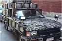

| E-WASTE |
| Introduction | OUR WANTS | E-WASTE | AUTOMOBILES |
The latest report released by the United Nations predicts that by 2020 e-waste from old computers in South Africa and China will have jumped by 200–400 % and by 500 % in India compared to 2007 levels. It also states that by 2020 e-waste from discarded mobile phones will be about 7 times higher than 2007 in China and 18 times higher in India. The report also cites that in the United States more than 150 million mobiles and pagers were sold in 2008, up from 90 million five years before, and globally more than 1 billion mobile phones were sold in 2007, up from 896 million in 2006. The UN report also estimates that countries like Senegal and Uganda can expect e-waste flows from personal computers alone to increase 4 to 8-fold by 2020.
There are growing concerns that most of the e-waste generated in developed countries is ending up in developing countries that are economically challenged and lack the infrastructure for environmentally sound management of e-waste. This results in adverse socio-economic, public health and environmental impact of toxins in e-waste. A study conducted in soil, air dust and human hair collected from an e-waste recycling site in Bangalore, India, clearly found increased concentrations of trace elements such as lead, zinc, silver, cadmium and copper compared to reference sites . A further study in China on human scalp hair, assessing the extent of heavy metal exposure to workers and residents in areas with significantly high e-waste recycling operations, found higher levels of cadmium copper and lead confirming the previous findings.
A toxicity study of sediments collected from two rivers in Guiyu, China, where significant amount of informal e-waste recycling is taking place, showed that most sediments exhibited acute toxicity due to elevated levels of heavy metals and other chemicals and low pH caused by uncontrolled acid discharge. Furthermore, a study of heavy metals (copper, cadmium, lead, zinc, arsenic, mercury) and persistent organic compounds including polycyclic hydrocarbons (PAHs) and polychlorinated biphenyls (PCBs) conducted in Wenling, an emerging e-waste recycling facility in Taizhou area, China, found high levels of the above compared to reference sites.China and India are not the only countries impacted by e-waste. A number of other countries in Asia including Philippines, Hong Kong, Indonesia, Sri Lanka, Pakistan, and Bangladesh, Malaysia and Vietnam and also a number of countries in Africa including Nigeria, Kenya, Senegal and Ghana are the latest targets for dumping e-waste generated in advanced economies. Managing e-waste in these countries is not easy given that most developing countries have neither a well-established system for separation, storage, transportation, treatment and disposal of waste nor any effective enforcement related to managing e-waste.
Thus, co-disposal ofe-waste with domestic waste in open dumps is generally practiced in many developing countries causing severe damage to the environment and human health.